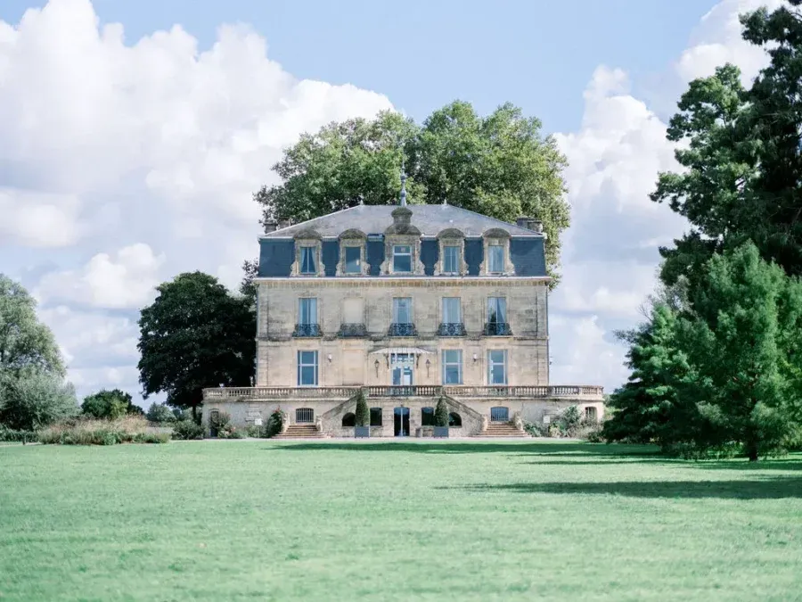
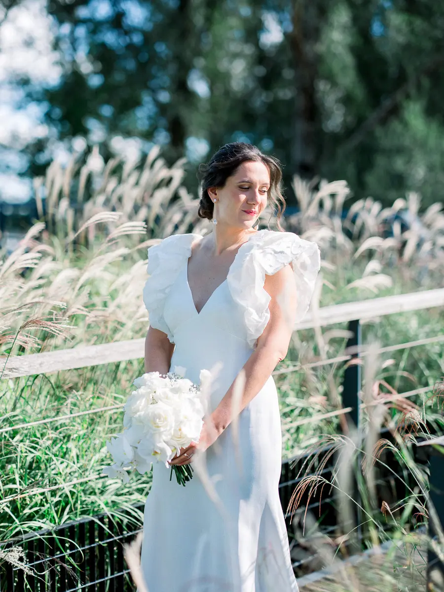
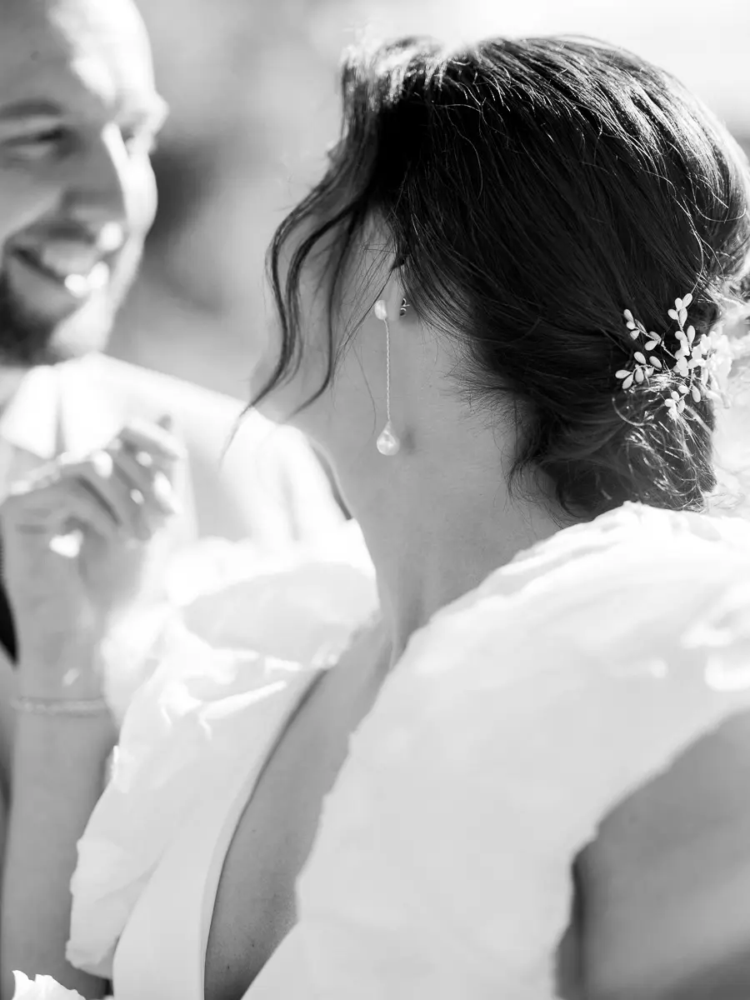

Recent weddings
in France
Unique celebrations imagined in Gironde, Dordogne, the Basque Country and beyond.

Château Grattequina
A wedding in white and light, on the banks of the Garonne.
Photography · Tristan Perrier






Our couples

Marie & Charles
On 4 October 2025, Marie and Charles celebrated their wedding at Château Pontac Lynch, surrounded by 80 guests, in a retro English boudoir atmosphere: chic and full of…
Read their story
Alexandra & Clément
Alexandra & Clément imagined a wedding that was truly theirs: elegant, vintage, in mocha tones and, above all, full of surprises. At Domaine de la Dame Blanche in…
Read their story
Alicia & Alexandre
In June 2025, Alicia and Alexandre imagined a wedding devoted to family and friends, designed as an intimate, timeless moment. Nature everywhere, plays of light, candles…
Read their story
Yvonne & Thomas
In September 2025, Yvonne & Thomas, a Franco-German couple, crossed France to celebrate their union at Château Belle Époque, in the Landes. Conceived as a timeless…
Read their story
Chloé & Romain
We never tire of reliving this colourful wedding at La Ferme d'en Chon! A day as sparkling as it was elegant, carried by a voluptuous gown, refined decor inspired by…
Read their story
Caroline & Jackson
They are beautiful… beautiful in friendship, in love, in generosity and in humour. A radiant couple! Love and union were their priority. After an intimate ceremony at…
Read their story
Jennifer & Laurent
After a proposal on a small beach near the tip of Cap Ferret, facing the Dune du Pilat, Jennifer and Laurent celebrated their wedding at the magnificent Château de Garde…
Read their story
Marion & Charles
In May 2022, Marion & Charles said “I do” for the rest of their lives! A chic and bohemian wedding, colourful and refined: everything we love… A day rooted in tradition…
Read their story
Charlotte & Arnaud
Arnaud and Charlotte celebrated their union at home. Sharing the same name meant a great deal to them, for all their personal and professional plans. So we prepared a…
Read their story
Delphine & Haythem
On-the-day coordination ? Of course: I also take care of just that part if you have handled everything before. Delphine & Haythem planned their chic wedding masterfully…
Read their story